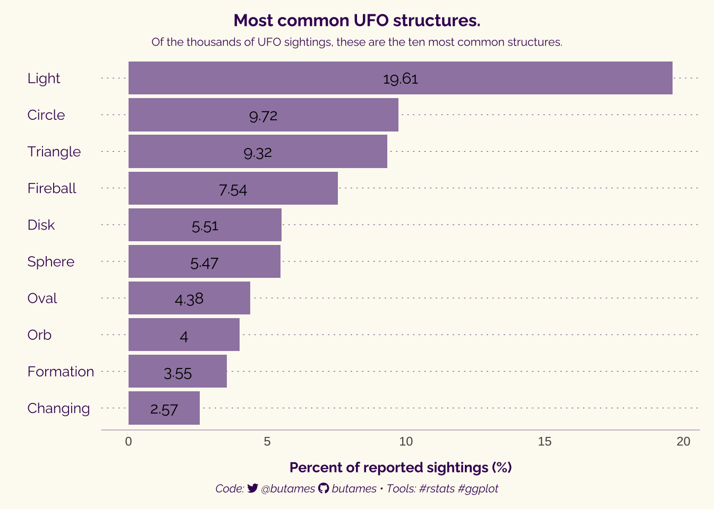

The data for this week’s TidyTuesday challenge comes from from the National UFO Reporting Center, cleaned and enriched with data from sunrise-sunset.org by Jon Harmon. Apparently, this is an updated version of an earlier TidyTuesday exercise completed in 2019. I will have to go back and look at som fo thevisual documents from that challenge week.
Figure 1 - First UFO picture taken by Paul Trent in McMinnville, OR. USA (c. 1950).1
Figure 2 - Second UFO picture taken by Paul Trent in McMinnville, OR. USA (c. 1950).2
Library
I will be making use of the following packages in R.
tidyverse – Workhorse suite fo packages for data wrangling and plotting.1
tidytuesdayR – For retrieving the weekly challenge data.2
camcorder – To create a canvas for the plot and visual documents, and for recording steps in creating the final product.3
rio – A package to help open and save projects and data.4
ggtext – Allows for Markdown and HTML rendering for ggplot2.5
showtext – Allows for custom fonts in ggplot (such as Google Fonts).6
here – To easily find files and save files using the here() function.7
scales – This package is used to customise to control the appearance of axis and legend labels
janitor – Tools for examining and cleaning dirty data.8
## Using the TidyTuesday API ----# tuesdata <- tidytuesdayR::tt_load(2023, week = 25)# ufo_sightings <- tuesdata$`ufo_sightings`# # places <- tuesdata$`places`# # day_parts_map <- tuesdata$`day_parts_map`# # export(ufo_sightings, file = "data/ufo_sightings.csv", format = "csv")# export(places, file = "data/places.csv", format = "csv")# export(day_parts_map, file = "data/day_parts_map.csv", format = "csv")## Direct Download from Github ----# ufo_sightings <- read_csv("https://raw.githubusercontent.com/rfordatascience/tidytuesday/master/data/2023/2023-06-20/ufo_sightings.csv") # # places <- read_csv("https://raw.githubusercontent.com/rfordatascience/tidytuesday/master/data/2023/2023-06-20/places.csv")# # day_parts_map <- read_csv("https://raw.githubusercontent.com/rfordatascience/tidytuesday/master/data/2023/2023-06-20/day_parts_map.csv")## Data Source ----# https://github.com/rfordatascience/tidytuesday/blob/master/data/2023/2023-06-20/readme.mdufo_sightings <-read_csv("data/ufo_sightings.csv")places <-read_csv("data/places.csv")day_parts_map <-read_csv("data/day_parts_map.csv") %>%as_tibble()
Viewing the Data
Code
# View Data ----
Color Palette
For some reason, when we think of Aliens and UFOs we think of greens, shades of black and grey, silvery, and perhaps blues. Apart from the greens, I think these are colors that are friendly to those who are colorblind. I wanted to give it my own take and went hunting for a suitable palette. I found the following on Pintrest (shown by their HEX values): #b6f486,#88d4c3,#a8aedd,#8769b6,#400e63 colors.3 I may not use them all but we shall see.
Code
# Plot Aesthetics ----bkgcol <-"#FDFAF1"# Background Colorttlcol <-"#010101"# Title color. I'm going with the dark purple.subttlcol <-"#010101"# Subtitle colorcapcol <-"#010101"# Caption colortxtcol <-"#400E63"# Text color# alien <-c("#400e63", "#532672", "#663e82", "#795691", "#8c6ea1", "#9f86b1") %>%rev()# Modifications to txt <- alien[1]accent <- txt
Fonts
Dan Ohem used the fonts Barlow and Orbitron. The Orbitron font in particular looks very space age. This is great, but I feel it is a bit too on the nose. I am comfortable with a more traditional looking font. When I was Googling around, I across Michroma, which may be a good substitute for Orbitron if you’re looking for that. It has got that sans serif look and and spaced out in a way that looks a bit like glypphs punched out by some advanced computer. Another font, Spectral, may also be an option. However, Spectral is a serif font. There is also Gruppo, another san-serif font. However, I will go with Raleway and Montserrat. Both are sans-serif fonts, but the former looks to have a tighter knit, while Montserrat feels a bit more relaxed (the more dapper version of an Arial if you will).
In previous projects, I have made use of the str_glue() function, which is a part of the stringr package in tidyverse. That function acts as wrapper giving you some of the basic functionality of concatenating strings. However, the actual glue package is more versatiel and useful for that. In this particularly exercise, I have chosen to use the glue package.
One of the features of R I like, is that you can create objects out of anything, which can then read into another object. Be it an image, vector, or even another dataframe. In this case, I am attaching an image saved in R as the object dfufo. It is the silhouette of a UFO with lights. I am hoping to use it later in one of the plots I create, most likely a modified pie chart (this is inspired Dan Oehm). The image itself is from a website called OpenClipArt.4
I am trying to get into the habit of being strategic with my data cleaning and that means using functions that make my life easier. The clean_name() function from the janitor package, cleans up variable names when you import data (e.g., it will replace spaces with an “_” or remove special characters. Really anything that R struggles with. There isn’t an equivalent of this function in dplyr. Typically, when you import the data with the problematic variable names, R will do its best to clean it up. You will then have to use the rename() function in dplyr to clean them up. The janitor packaage makes this process less cumbersome. The clean_names() function in janitor is more powerful than the rename() function in dplyr. The clean_names() function can automatically clean up column names, replacing spaces with underscores, converting to lowercase, and removing special characters).
One thing about this process, is that I have learned to create and use functions in R. Or at least I know have a rudimentary knowledge of it. The below code snippet does the following:
sample_summary <- function(n) {
x <- ufo_sightings %>%
mutate(id = 1:n()) %>%
filter(str_length(summary) > 120) %>%
sample_n(n)
text <- x %>%
pull(summary) %>%
str_to_sentence()
list(
text = paste0('"...', text, '..."'),
id = x$id
)
}
Another wonderful quality of R is that you can even create and store images in a data object. For example, below in the data object named df5ufo it contains three columns: x, y, and image. I downloaded a UFO silhoutte image, and I upload that into the dataframe using the written script. The x and y columns store the coordinates of the center of UFO image, and the image column stores the image itself.
Code
# PREPARE A SUBSAMPLES OF DATA ----# Create a dataframe with a subsample of data that sums the total population of each state using the total population of the towns/cities where the UFO was sighted.df1 <- places %>%filter(country_code =="US") %>%group_by(state) %>%summarise(pop =sum(population)) %>%ungroup()# RATE OF UFO SIGHTINGS ----# Create a dataframe that calculates the rate of sightngs in each state using the population of the sighting towns/cities as the denominator (df1).df2 <- ufo_sightings %>%filter(country_code =="US") %>%count(state) %>%left_join(df1, by ="state") %>%mutate(r = n/pop*10000,x = ((r -min(r))/(max(r) -min(r)) * (1-0.2) +0.2),xmin = (1-x)/2,xmax = x + (1-x)/2,alpha = r/max(r) )# UFO SHAPE ----# Many UFO sightings account for a particular shape of the object (e.g., disc, orb, etc.).# We also want to limit this type of siting to the top 10 to create our plot.# This data will be used to create a horizontal bar chart.df3 <- ufo_sightings %>%group_by(shape) %>%summarise(numbers =n()) %>%mutate(percent = (numbers /sum(numbers)*100), percent =round(percent, 2)) %>%arrange(desc(numbers)) %>%mutate(shape =ifelse(is.na(shape), "unknown", shape)) %>%filter(!shape %in%c("unknown", "other")) %>%slice_head(n=10) %>%mutate(shape =as.character(shape),shape =str_to_title(shape))# A note, I filter out the observations that correspond to an Unknown structure, or a structure that the sightee classified as "Other". I did this using the `filter()` function. Specifically, `filter(!shape %in% c("unknown", "other"))`. Just so you are aware, the %in% operator in R is used to check if a value is contained in a vector. So, the expression shape %in% c("unknown", "other") checks if the shape variable is contained in the vector c("unknown", "other"). If the shape variable is contained in the vector, then the condition is met and the row will be kept. If the shape variable is not contained in the vector, then the condition is not met and the row will be dropped.# I also used the `str_to_title()` to change the first letter of each word in the shape column to an uppercase. It makes for a plot labeling that is cleaner looking.# TIME OF DAY -SIGHTINGS# Time of day with the most sightings.df4 <- ufo_sightings %>%mutate(day =wday(reported_date_time),hour =hour(reported_date_time),wday =wday(reported_date_time, label =TRUE) ) %>%count(day, wday, hour) %>%mutate(alpha = n/max(n),hour_lab =case_when( hour ==0~"12am", hour <=12~paste0(hour, "am"), hour ==12~"12pm",TRUE~paste0(hour-12, "pm")) )# OBJECT CONTAINING UFO SVG ----# I imported this image (it is a silhouette) from a free clip art website.# The below code is placing the image in a dataframedfufo <-tibble(x =0,y =-5,image =image_read("img/ufo.svg") %>%image_fill(color ="none", fuzz =10) %>%circle_crop())# SAMPLE RANDOM DESCRIPTORS OF SIGHTINGS# In the original dataframe, there is a variable (i.e., **summary**) where they provide a descriptor of the sighting. For instance sample_summary <-function(n) { x <- ufo_sightings %>%mutate(id =1:n()) %>%filter(str_length(summary) >120) %>%sample_n(n) text <- x %>%pull(summary) %>%str_to_sentence()list(text =paste0('"...', text, '..."'),id = x$id )}quotes <-paste0('"...', str_to_sentence(ufo_sightings$summary[c(47816, 6795, 93833)]), '..."')
HEX Tile Map
Increasingly, I have been seeing the use of HEX tile maps or plots in data vizual documents, particularly when it comes to showing a map of continental USA, when your objective is not to worry about relief features or borders, that are typically the feature of a map visual. Maps are relevant because you want to show information about a physical area relative to another (e.g., where one city is relative to another city in terms of distance). However, you may simply want to allude to the notion of a map without having those kinds of features be central to what you are creating. For instance, you create a visual document, that shows some representation of each state with some data on it, but nothing else, other than the general positioning of the state. Hence the HEX tile map. In my experience it is somewhat straightforward in Tableau or Power BI. I have never attempted it in Looker Studio (i.e., Google’s BI service). Anyway, there are different ways to create one in R, and the below is an approximation.
The main inspiration for this plot was the work of Dan Oehm on twitter.
However, their approach to arrranging the different plots on the page, feels a bit complicated to me. I am going to try and duplicate their approach, but I will make use of the cowplot package. They used the patchwork package to achieve what I am attempting to do here.
Making HEX tile map/ HEX bin map with ggplot can be challenging. However the geofacet package, helps you get around this process a bit easier.
Pie charts are reviled who create professional data visual documents professionally. While visually appealing, they can be difficult to interpret particualrly when the data don’t show wide variation. And there is wide variation in the categories, one option is to simply rely on a bar chart or a stacked bar chart. given this, move forward with using pie charts cautiously.
The package ggplot has a bit of a workaround for This will be a modified pie chart. The coord_polar() is used in ggplot to create pie charts. It is a function that essentiallly modifies a stacked barchart, giving the aesthetic appearance of a pie chart. Similar to what happens when you use the cord_flip() function to turn a vertical bar chart into a horizontal bar chart.
ttl_text <-glue("Most common UFO structures.") sub_text <-glue("Of the thousands of UFO sightings, these are the ten most common structures.")
Bar Chart
My thought is that the code I am working on contains a bit of redundancies (see the appendix for the original code). For creating bar charts, I prefer what I detail below. For instance, the creator (Dan Oshem), made use of the geom_col function, which creates a bar chart such that the bar heights or lengths (if looking at it horizontally) represent the absolute numbers. However, I prefer using the geom_bar which creates bars based on proportion. It is a an easier way to interpret data visually, and for when you actually plot proportions.
Code
# PLOT 3 - BAR CHART OF COMMONLY REPORTED STRUCTURES ----## Create the plot----pf3 <- df3 %>%ggplot(aes(x =reorder(shape, percent), y = percent)) +geom_bar(stat ="identity", fill = accent) +geom_text(aes(label = percent), family = ft, position=position_stack(vjust=0.5)) +## Change plot to horizontal ----coord_flip(clip ="off") +## Add labels to the plot----labs(x ="",y ="Percent of reported sightings (%)",title = ttl_text,subtitle = sub_text,caption = cap_text) +## Give the plot a theme ----theme_minimal() +theme(plot.title.position ="plot",plot.caption.position ="plot",legend.position ="none",plot.background =element_rect(fill = bkgcol, color = bkgcol),panel.background =element_rect(fill = bkgcol, color = bkgcol),plot.margin =margin(t =10, b =10, r =10, l =10),axis.title.x =element_text(size =10, face ="bold", family = ft, color = txtcol, margin =margin(t=10)),axis.title.y =element_text(size =10, face ="bold", family = ft, color = txtcol, margin =margin(t=10), hjust =0.5),axis.text.y =element_text(size =10, family = ft, color = txtcol, hjust =0),axis.line.x =element_line(linetype ="solid", linewidth =0.1, color = txtcol),panel.grid.major.y =element_line(linetype ="dotted", linewidth =0.15, color ="#400E63"),panel.grid.minor.y =element_blank(),panel.grid.major.x =element_blank(),panel.grid.minor.x =element_blank(),plot.title =element_markdown(family = ft,colour = txtcol,face ="bold",size =12,hjust =0.5,vjust =0.5 ),plot.subtitle =element_markdown(family = ft,colour = txtcol,size =8,hjust =0.5,vjust =0.5 ),plot.caption =element_markdown(family = ft,colour = txtcol,face ="italic",size =8,hjust =0.5,vjust =0.5 ) )## Display the plot----pf3

Create Data Vizual
With the above code, I have created a individual plots for what I want to show with the data. Now the job is to arrange it all on broad sheet. My